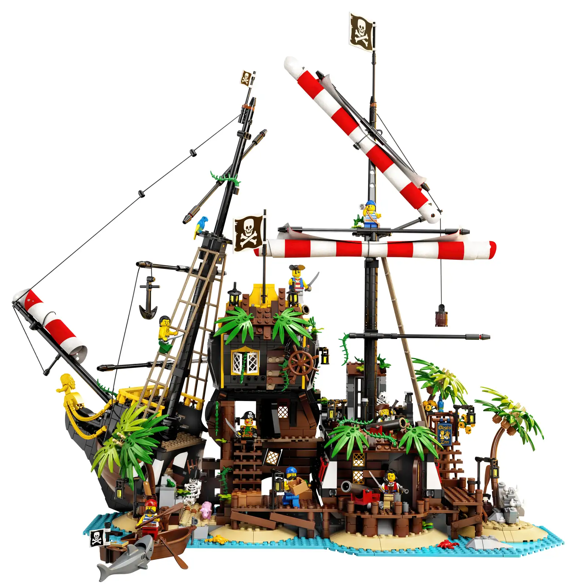

Piraten van Barracuda Baai
Een scheepswrak boordevol verrassingen
Haal nostalgische herinneringen op aan LEGO® bouwprojecten uit je jeugd met dit LEGO Ideas Piraten van Barracuda Baai (21322) scheepswrakmodel om neer te zetten en mee te spelen. Geniet van wat tijd voor jezelf terwijl je aan het bouwen bent of deel je bouwplezier met anderen.
